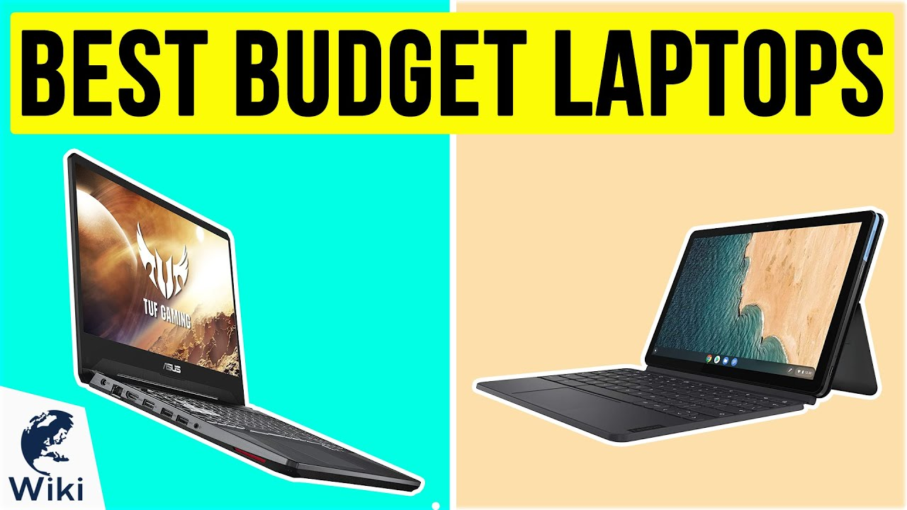

| Home About Gallery Contact us |
|---|
This blog is all about laptops. Here you’ll find honest reviews, buying guides, and the latest updates on laptops — from budget-friendly devices to high-performance machines. My goal is to help you choose the right laptop for your needs.
.webp)
Explore powerful gaming laptops with latest graphics and processors.
.webp)

Get the most value for your money with these budget-friendly options.
**5 Things to Check Before Buying a Laptop**
Buying a laptop is not easy, especially with so many options in the market. In this blog, we guide you through the most important things you must check before making a purchase. These tips will help you avoid mistakes and save money. Perfect for first-time buyers.
**Best Laptop Brands Compared**
HP, Dell, Lenovo, Apple — which one should you choose? [Read Full Blog]
Every laptop brand has its strengths and weaknesses. Some are known for durability, others for performance, and some for stylish design. In this blog, we compare top brands like HP, Dell, Lenovo, and Apple. This will help you choose the brand that matches your needs and budget.
**How to Make Your Laptop Faster**
.jpg)
Easy tricks to speed up your laptop without spending extra money. [Read Full Blog]
Is your laptop running slow? Don’t worry, you don’t always need to buy a new one. In this blog, you’ll learn simple but powerful tricks to boost speed and performance. These steps are easy to follow and can make your laptop feel almost new again.
Hi, I’m Umair.
I share insights and reviews about laptops to make your tech decisions easier. [Learn More → About Page]